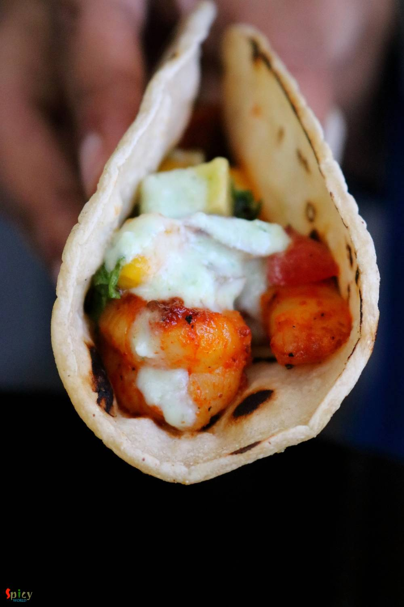

Simple and Easy Recipes
Tandoori Shrimp Tacos with Mango salsa & Raita
© 2016 Spicy World, Published on: Jun 19, 2018
The name itself sounds delicious ... isn't it ?? Tacos and Salsa are the part of Mexican cuisine. Nowadays many restaurants serve fusion food. This is an Indo - Mexican recipe. You can make it with chicken also. There are so many Taco recipes on the Internet. But my family fell for these fusion version where Tandoori Shrimps were wrapped in charred tortillas along with some spicy, tangy mango salsa and few drizzles of cooling raita. Try this easy recipe in your kitchen and let me know how it turned out for you.

Ingredients
- For Shrimp:
- 25 shrimps, deveined and cleaned.
- 1 Tablespoon of ginger, garlic, green chili paste.
- Salt.
- 1 Teaspoon of black pepper powder.
- 1 Tablespoon of Tandoori masala powder.
- 2 Teaspoons of red chili powder.
- 1 Tablespoon of lemon juice.
- 2 Tablespoons of Olive oil.
- For mango salsa:
- 1 fully ripe mango, peeled and chopped.
- 1 tomato, deseeded and chopped.
- 1 avocado, chopped.
- 2 Tablespoons of chopped onion.
- 1 jalapeno / green chilies, chopped.
- 2 Tablespoons of chopped coriander leaves.
- Salt.
- Half Teaspoon of black pepper powder.
- 2 Teaspoons of lemon juice.
- 1 Teaspoon of olive oil.
- For raita:
- Half cup of thick yogurt.
- 1/4th cup of water.
- 2 Tablespoons of Green chutney (coriander / mint).
- Salt and pinch of sugar.
- For tacos:
- 6 small tortillas / rotis (corn / flour / wheat)


Steps
Marinate the shrimps with everything under the 'shrimp' section and let it rest for 1 hour.
Heat 1 Tablespoon of olive oil in a pan and fry the shrimps for 3 minutes on high flame. Do not overcook them as they will become rubbery.
In a mixing bowl add everything under the salsa section. Mix well with a spoon and keep side for 30 minutes. If you don't find avocado, then skip it.
Take the yogurt and water in a bowl. Give a good mix with a whisk.
Then add the green chutney, salt and sugar. Whisk again and keep aside for 10 minutes.
Place the tortillas on direct heat or on a hot tawa for 3 seconds per side.
Time to assemble the tacos.
Place warm tortillas in a plate.
Arrange 4 - 5 shrimps in each taco.
Add spoon-full of salsa and then finish it off by drizzling a Teaspoon of raita.
Your Tandoori Shrimp Tacos are ready
Serve them hot with coke or beer ... (This is for serving 2 person).
")